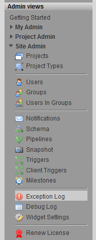

Exception Log
The exception log SObjects provides a very convenient way for TACTIC to store, view and diagnose problems or errors in TACTIC as they come up. This is a necessary requirement in order to properly diagnose a bug or error that will arise.
A default view of the exception log is available in the "Admin" section of the Schema Sidebar

Because TACTIC records every stack trace in the system, it is possible to simply find the last stack trace generated by a particular user. This eliminates the need to constantly reply to an error report asking for the stack trace of the error (which by then is often lost because the user has decided to work on another task). With the exception log, it becomes trivial to look up the error witnessed by the user and start diagnosing the problem.